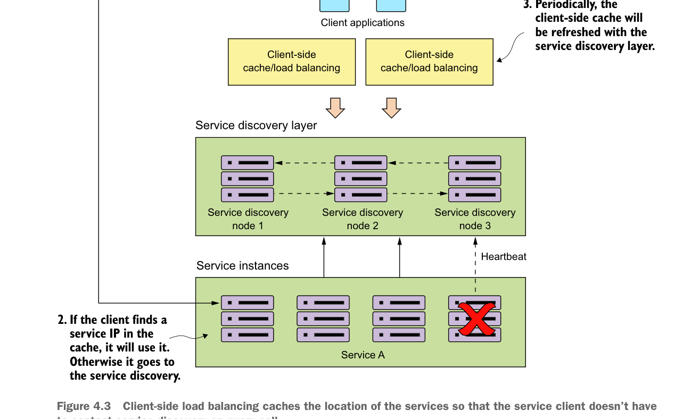

Cân bằng tải phía client lưu cache vị trí của các dịch vụ để client dịch vụ không phải liên hệ khám phá dịch vụ ở mỗi lần gọi.
4.2.2 Khám phá dịch vụ trong thực tế với Spring và Netflix Eureka
Giờ bạn sẽ triển khai khám phá dịch vụ bằng cách thiết lập một agent khám phá dịch vụ, rồi đăng ký hai dịch vụ với agent đó. Sau đó bạn sẽ cho một dịch vụ gọi dịch vụ khác bằng thông tin được truy xuất qua khám phá dịch vụ. Spring Cloud cung cấp nhiều cách để tra cứu thông tin từ một agent khám phá dịch vụ. Chúng ta cũng sẽ xem xét ưu và nhược điểm của từng cách tiếp cận.
Một lần nữa, dự án Spring Cloud giúp việc thiết lập kiểu này trở nên đơn giản. Bạn sẽ dùng Spring Cloud và engine khám phá dịch vụ Eureka của Netflix để triển khai mẫu khám phá dịch vụ của mình. Đối với cân bằng tải phía client, bạn sẽ dùng Spring Cloud và các thư viện Ribbon của Netflix.